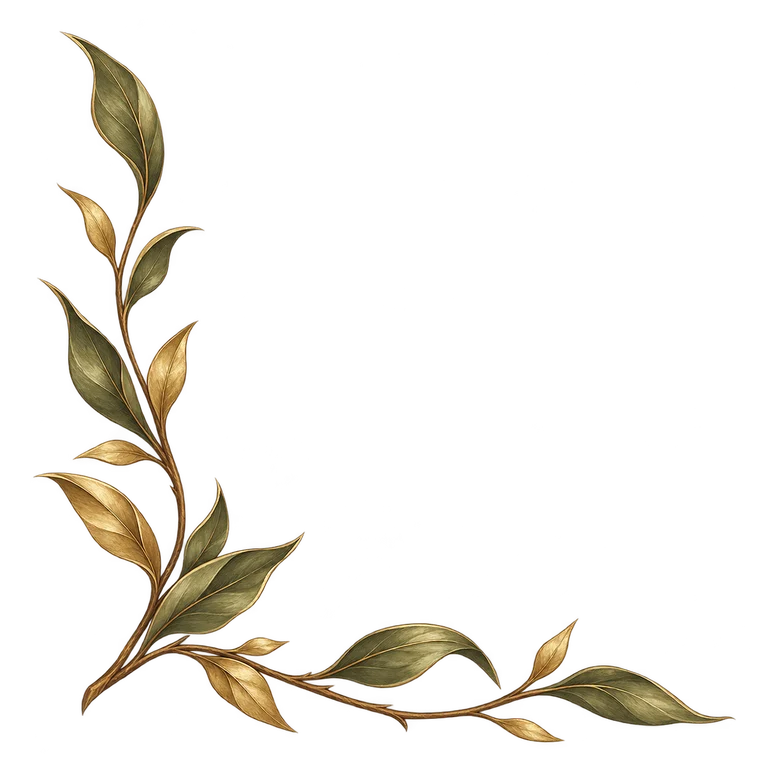

A · Ranch Dossier — Production Asset Kit
Parchment, brass frames & tab states
Scalable interface elements · Existing creature artwork retained
Strength3
Dexterity8
Stamina7

Scalable interface elements · Existing creature artwork retained
